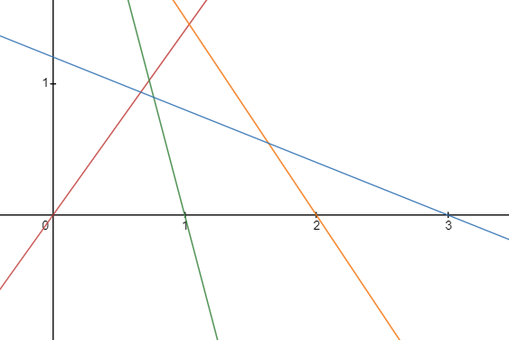
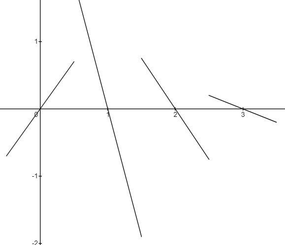
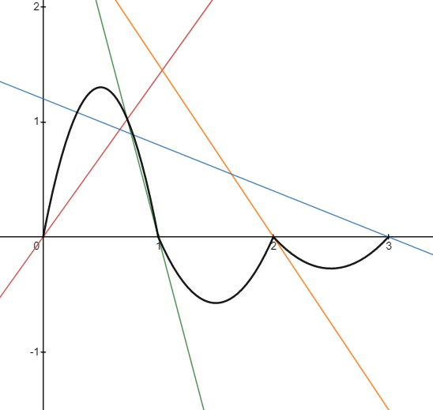
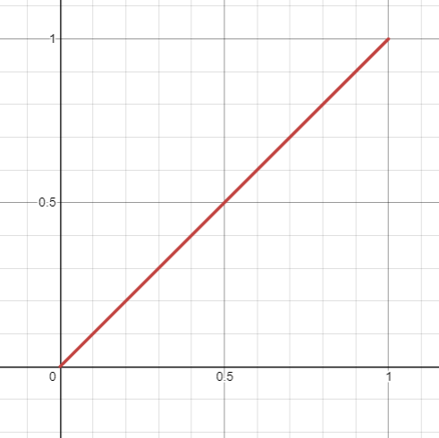
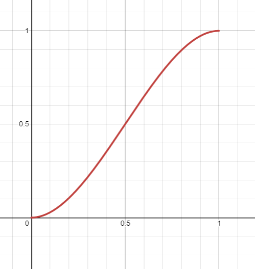
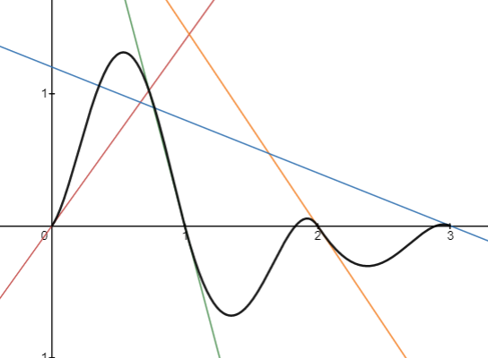
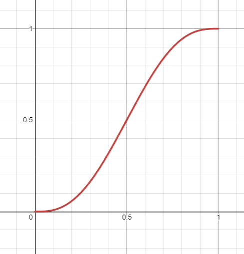
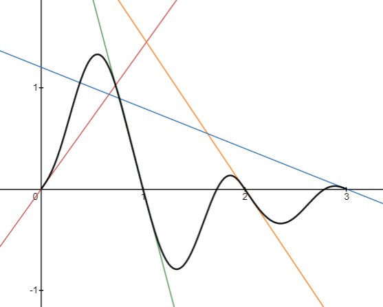

OpenGL Retro Voxel Renderer Tutorial
By Harrison B
3 - Ken Perlin Saves the Day
The Challenge of Smooth Noise
What, you want your noise to be 'smooth' now? Was value noise not good enough? I happen to think it looked rather nice:

No? Okay. Well, we're going to need a different approach then. We still want a grid-based noise generator where we can pass a coordinate pair to a function to get a random value, but it would be nice if we could choose values in between those integer coordinates. If we could smoothly interpolate to find a value that is a sort of weighted combination of neighboring random values and is continuous, that would be just perfect. One might consider bilinear filtering to smooth out value noise, but this is only half of a solution and leaves a lot to be desired:

Sure it looks smoother, but it's still quite rough and so obviously aligned to a grid. I have to give credit to this solution though because upon adding different octaves of this linearly filtered noise together, you can still achieve some impressive textures:

It turns out that there is a more elegant solution along those lines, with a few key differences. It's called Perlin noise! You're probably familiar with Perlin noise and its ability to produce seamless and smooth grid-based noise like this:

Now that's SMOOTH! Why wouldn't we use Perlin noise?! One thing that might scare people away when trying to learn Perlin noise is the mention of... dot products... and derivatives... shudder. Truthfully though, there's nothing complicated going on as far as linear algebra and calculus goes.
Perlin Noise: A One Dimensional Analog
Let me show you what Perlin noise could look like in one dimension instead of two to ultra-simplify things! Imagine a graph with its x axis divided into equal intervals of one, and a line with a random slope passing through each number on the axis. Like this:
If we know the equation of each line, it is really easy to find a y coordinate on the line given an x coordinate. The lines in the image above could be expressed like this:
Where \(A\), \(B\), \(C\), and \(D\) are the slopes of each line. In this example, \(A=1.4\), \(B=-3.8\), \(C=-1.5\), and \(D=-0.4\). Now we have a bunch of lines with random slopes passing through the x axis. So what? Well, imagine that each line defines a unique segment of our overall Perlin function (without considering smoothness). If we just sampled the nearest line in each interval to define our Perlin function, it would look like this:
Putting a lot of these lines together would give us a very random function. But we don't want our Perlin function to have gaps. What if instead of simply selecting the nearest line in an interval, we took the weighted average of two lines based on the x coordinate (i.e. linear interpolation)? We get this:
Now we are getting somewhere! Each part of our Perlin function is connected with no gaps. Let's do an example of the above computation. Say we want to find the value at \(x=1.7\). We know that we are dealing with the interval between \(x=1\) and \(x=2\) so we are focused on the line equations \(y=B(x-1)\) and \(y=C(x-2)\). The value of \(y=B(x-1)\) at \(x=1.7\) is \((-3.8)(1.7-1)=-2.66\). The value of \(y=C(x-2)\) at \(x=1.7\) is \((-1.5)(1.7-2)=0.45\). Finally, we can average them by acknowledging that \(x=1.7\) is 70% of the way between \(x=1\) and \(x=2\), so we can linearly interpolate by calculating \(-2.66+0.7\times(0.45-(-2.66))\). This gives us a value of \(-0.483\).
The problem is that our Perlin function has humps that crease at the edge of each interval to create jaggedness that is very much not smooth. Instead of linearly interpolating, we need to use an ease-in ease-out curve that ensures the slope of each curved part is the same on each side of an interval edge (this is where derivatives come in).
When we linearly interpolate between two values \(a\) and \(b\), we compute \(a+t\times(b-a)\) where \(t\) is a percentage value between 0 and 1 determining how far along we are on the interval between \(a\) and \(b\). Instead of using \(t\), which looks like this:
We could instead use \(3t^2-2t^3\), which looks like this:
Our new interpolation scheme, \(a+(3t^2-2t^3)\times(b-a)\), would produce a Perlin function that looks like this when used for averaging lines together:
Amazing! That's really all there is to it. We generate a bunch of random lines, and take a smooth weighted average of the two lines surrounding the interval of interest. That function \(3t^2-2t^3\) is what Ken Perlin calls a fade function. In general it needs to have a slope (first derivative) of 0 at \(t=0\) and \(t=1\) as well as be symmetrical about the point \((0.5,0.5)\). Ken Perlin recommends choosing a function that also has a second derivative of 0 at the same points to prevent some visual artifacts that can occur with our current fade function. Ken Perlin's fade function \(6t^5-15t^4+10t^3\) looks like this:
And the new Perlin function with this interpolation looks like this:
It's more or less the same, right? Before we move on to Perlin noise in two dimensions, take a moment to play around with the slope sliders in the Desmos activity below to produce different noise functions: